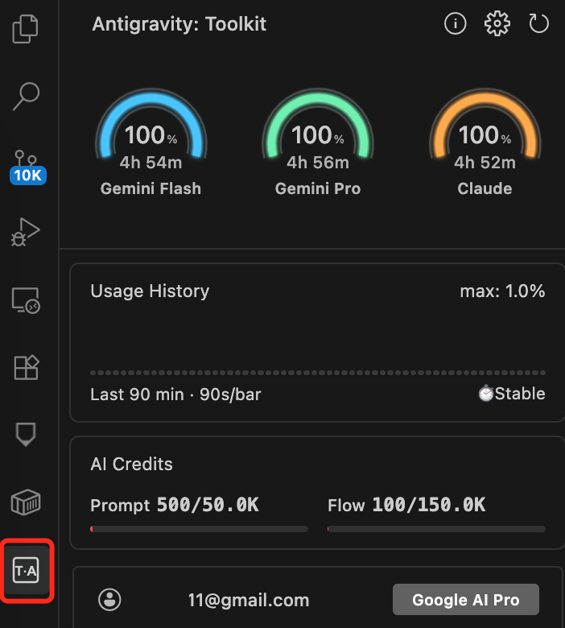

如果对于CC还不了解以及为何需要用它来做vibe coding请自行科普。本文主要分享谷歌IDE工具（Antigravity）使用实战技巧，解决日常额度不足、账号被封、不习惯CLI操作、费用支出高等问题。
Google AI Pro 会员可在 Antigravity上直接使用 Claude Code（Claude 4.5 Sonnet/Opus），虽然官方没有公布精确 token 数值，但有以下参考：
相对额度：约为 Claude 官方 $20 / 月订阅版的3 倍，日常编程使用（Bug 修复、重构、单测）基本够用
模型限制：Antigravity 中 Claude Sonnet 上下文窗口为1M（高于官方部分限制）
账号类型/模型额度/更新周期
账号类型 | Claude 模型额度 | 刷新周期 | 备注 |
免费版 | 未公开具体数字 | 每周 刷新一次 | 适合轻度使用 |
Google AI Pro | 约 150 条/5小时，或 1200 条/3天 | 每 5 小时 刷新 | 官方称"更慷慨的配额" |
Google AI Ultra | 更高额度 | 每 5 小时 刷新 | $250/月，优先级更高；刚发布的世界模型就需要它 |
重要限制：如果连续两次触发 5 小时限额，系统会启动 周限额（即进入"冷却期"，需等待更长时间才能恢复）。
二、更新周期（2026 年 1 月版）
官方设定：Google AI Pro 会员享受每 5 小时刷新一次的高速率限制，优先于免费用户（每周刷新）
近期调整：2026 年 1 月初部分用户反馈周期变为24 小时，1 月中下旬出现4-7 天周限额的新规则，即使 Pro 会员也可能触发周上限后需等待 4-7 天重置
显示方式：在 Antigravity Tools 面板可实时查看剩余额度与重置倒计时

面板需要安装第三方扩展 "Toolkit for Antigravity"
安装与打开路径：
先打开 Extensions 面板
搜索
Toolkit for Antigravity并 Install安装后，左侧活动栏会出现一个 Antigravity 专用图标（通常是 A 字母或 AG 图标）
点击该图标打开面板
三、额度用完后的解决方案
【推荐官方途径】
等待刷新：常规情况下等待 5 小时额度自动重置；若触发周限额则需等待 4-7 天
切换模型：Antigravity 自动支持模型切换，Claude 额度用完后可暂时使用 Gemini 3 Pro 继续工作，一般日常研发工作都能满足
升级订阅：升级至 Google AI Ultra 订阅，额度几乎无限量，适合重度编程使用；也是最新谷歌世界模型（labs.google/ProjectGenie）的门槛要求
四、合理使用，降低消耗（供参考）
先认知对齐：能控制的不是额度数字，而是消耗速度。
Antigravity等编程工具，反复大范围改写、长链路推理、全仓扫描，都会明显加速耗尽。所以策略核心是把 Claude 留给高价值、必须Claude才稳的环节，其他都交给更省的模型/流程。
把一个大任务拆成 3–5 个小任务（每次只改一个模块）
非必要，可以少用“Thinking/最高强度”档
让 Agent 先出计划/差异清单，再执行（避免反复全量重写）
任务分流：知道哪些必须用 Claude，哪些可用 Gemini3
把日常 coding 任务划分成 5 类（举例供参考，按实际情况来灵活安排）
必须交由Claude（高价值高风险）
复杂架构决策 / 多文件重构（尤其涉及边界、抽象、依赖整理）
棘手 bug 定位（多条件、竞态、异步、边界 case）
安全/权限/金额逻辑（金融/支付/订单、风控强约束）
对现有代码意图理解（历史包袱重、注释少、命名混乱）
优先 Gemini（省额度且够用）
写单元测试、补类型、补注释、补文档
UI/表单/配置文件、样板代码
小范围功能实现（明确输入输出，改动文件少）
日志/埋点/监控接入
混合（先 Gemini 后 Claude 审核）
先让 Gemini 做草稿/实现 → 再让 Claude 做 Review、查漏补缺、提风险点，能明显减少 Claude 用量
任何模型都行（直接自动化）
格式化、lint 修复、文件重命名、生成 changelog，这些尽量交给工具链（lint/formatter/脚本）
必须工具/检索
查 API、查 SDK、查第三方库参数等；直接用文档工具/搜索工具（有 MCP 更好），避免模型自造
让 Claude 更省的三条实用规则
禁止全仓扫描/读完整项目变成：提供关键文件/关键日志/关键接口定义
禁止反复推翻重来变成：每轮只允许 1 次方案变更；先评审再改
禁止长篇解释变成：根因一句话 + 修复步骤 + patch + 验证命令
如果想更工程化，做成模型路由规则
需求澄清/方案评审：Claude
代码生成/测试/文档：Gemini
复杂 bug + 最小 diff：Claude
lint/格式化/搬运：工具链
第三方 SDK 参数：文档工具/MCP
最后，强烈建议大家把谷歌AI全家桶用起来，Google AI Pro可走官网渠道自行购买，网上也有一些优惠获取方式。重度用户则考虑升级至 Google AI Ultra 订阅，还能优先体验谷歌最新的世界模型。